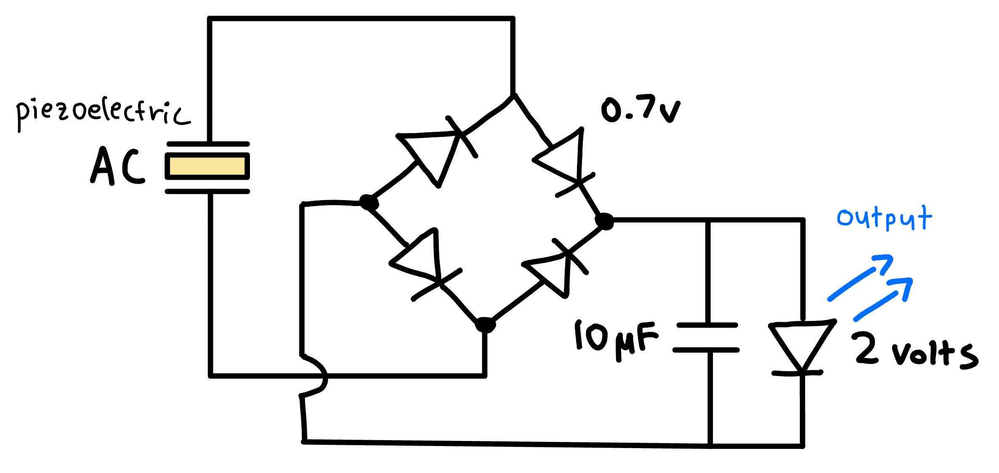
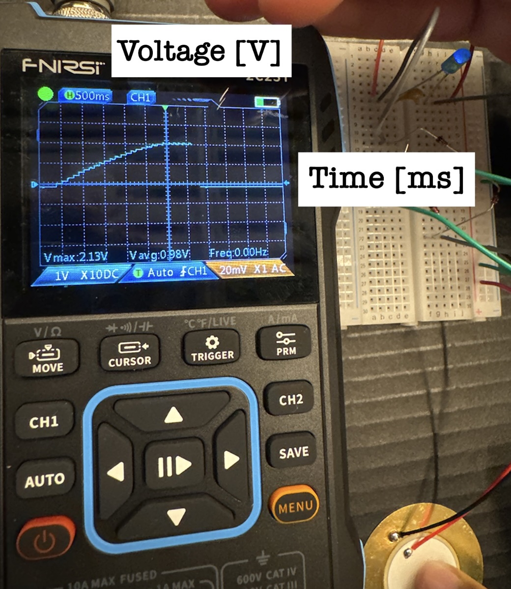
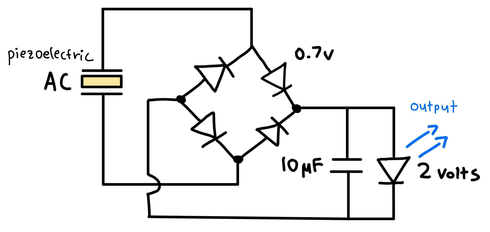
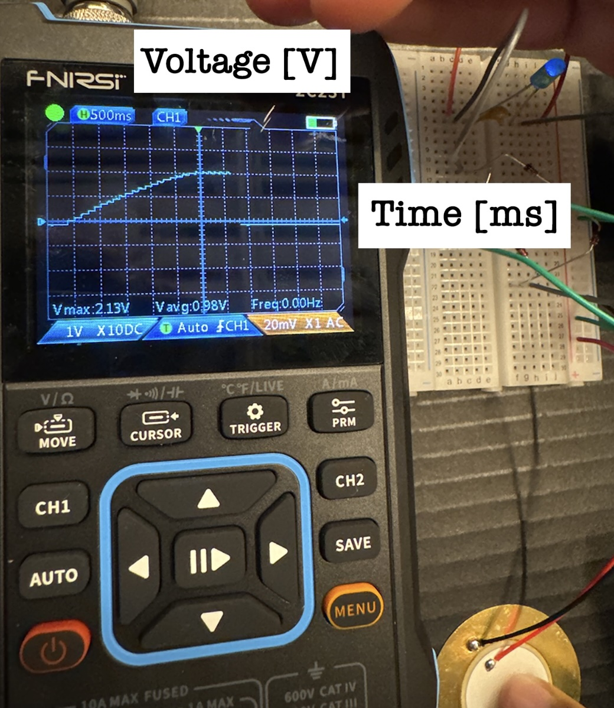
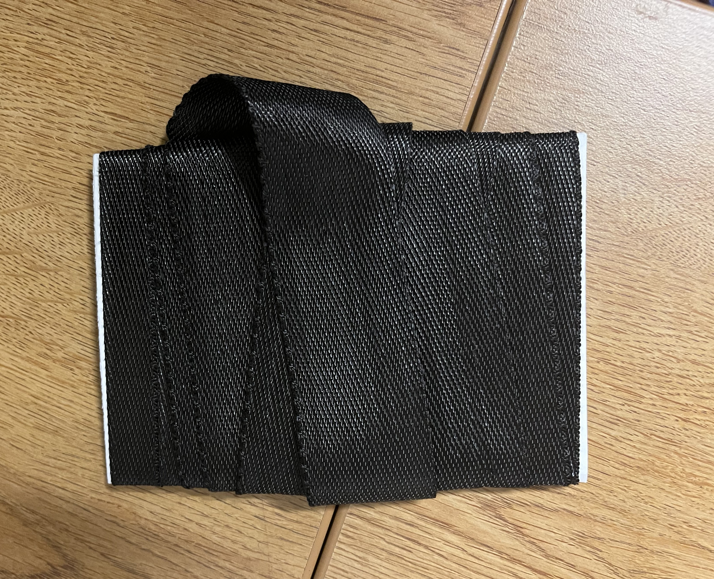
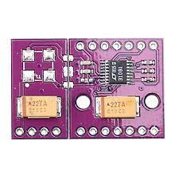
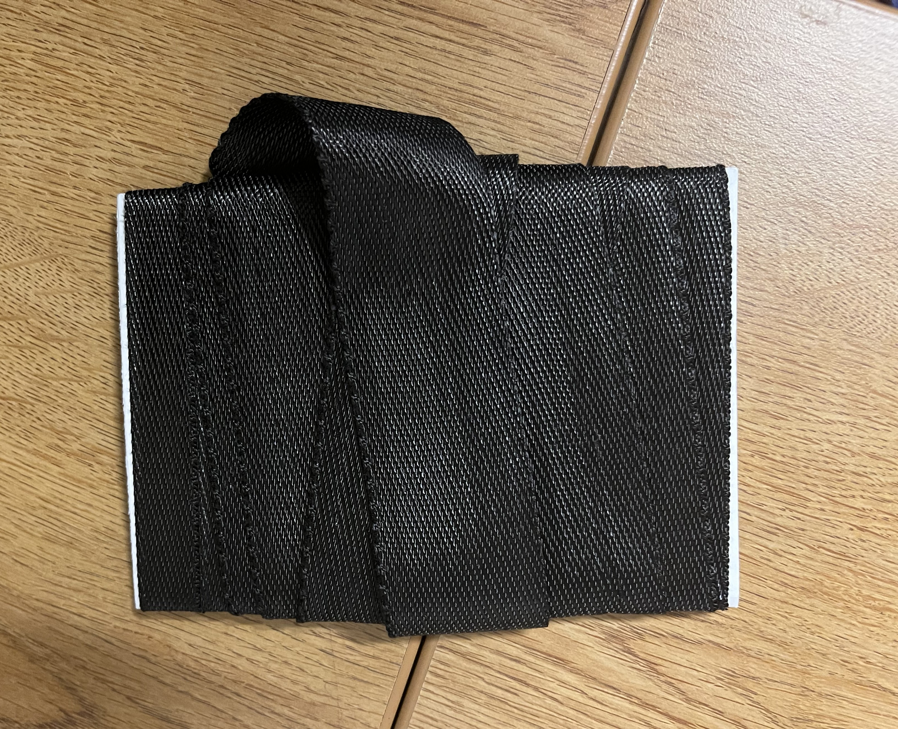
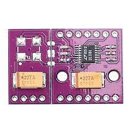

As population and energy consumption per capita continues to grow, scaling energy production in an environmentally sustainable manner
becomes paramount. This project aims to produce a line of apparel with broad appeal capable of recycling the energy supplied by the
user into electricity. The sources for this electric generation will be twofold: compressive forces from running and passive body heat.
This solution targets consumers with an
active lifestyle, specifically runners, hikers/campers, and frequent foot commuters. Additionally, since this product line aims to
generate sustainable energy, it appeals to environmentally conscious consumers. The product will be marketed as a lifestyle because
it seeks to combine sustainability with physical activity.
 



Our first product innovation is a shoe sole that anyone can put into their shoe to produce renewable electrical energy through cutting edge piezoelectric technology that harnesses mechanical compression energy from every step. Currently, we have a working prototype that has the basic main components and ideas incorporated but requires significant design changes for fashion and efficiency.
Additional companies active in this space include Voltaic Systems and Pvilion. Both companies develop apparel and equipment products, specifically bags and tents, incorporating electricity generation. However, their products either lack adequate portability for the typical outdoorsman or inefficiently and unreliably generate electricity since they rely solely on solar power. Through our product line, however, the user can generate electricity from many sources, including mechanical or thermal energy, rather than relying on a singular source, like solar power. Other companies that generate electricity in unique ways include Pavegen and Loomia. Pavegen is a company that designs floor tiles that produce electricity when pressure is exerted on the material. Additionally, Loomia produces a flexible material capable of generating electricity. However, these companies mainly focus on producing tiles or fabric capable of generating electricity instead of integrating the electricity generation within clothing. Our product line aims to make electricity generation more seamless and less noticeable on the clothes.
 



Our second product innovation is an stylish yet comfortable arm sleeve that one can wear around one's arm in order to generate electricity based on the difference in temperature between the body and the outside sorroundings. Such an arm sleeve uses thermoelectric peltier module in reversem as well as supporting power management circuitry in order to efficiently generate a current that can be used to charge devices and/or store electrical energy for later use. Currently, We have roughly half the necessary parts for developing our first prototype and we hope to fund the rest of the project through grants.
Additional companies active in this space include Thermogen, which focuses on generating electricity from body heat, specifically through utilizing thermoelectric materials. However, this company aims to recycle the thermal energy emitted by the user to keep a jacket warm. In contrast, our products aim to extract and store the energy from human movement. PowerWatch is also another major player in the thermoelectric wearables market, where they have produced a body heat powered watch that is self sustaining and never requires charging. Despite this, their thermoelectric energy generation application is limited only to a singular watch, which we hope to overcome with our product. Our plan is to create a constant source of electrical energy through body heat that can be stored in a battery or even used to power electronics.